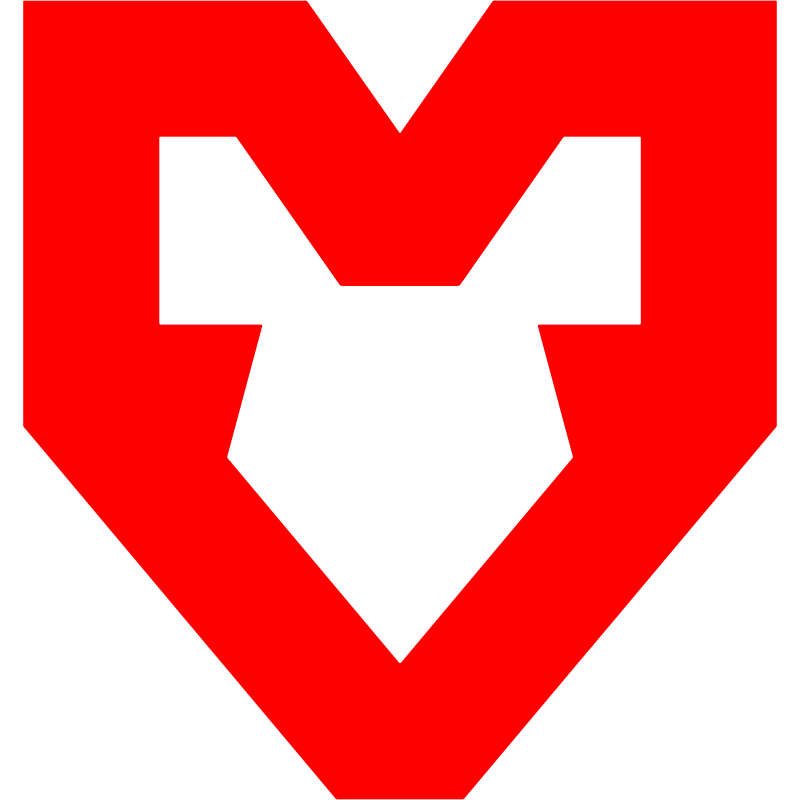

| Helyezés | Csapat | Játékosok | Pontszám | (1 hét)** |
|---|---|---|---|---|
| 1. |  MOUZ |
torzsi • Spinx • xertioN • PR • xelex | 1980 | +1 |
| 2. | Vitality | apEX • ropz • ZywOo • flameZ • mezii | 1930 | -1 |
| 3. | FURIA | Fallen • yuurih • YEKINDAR • KSCERATO • molodoy | 1916 | +1 |
| 4. | BETBOOM | Boombl4 • zorte • s1ren • cl1d3r • Magnojez | 1860 | +2 |
| 5. | Spirit | sh1ro • magixx • tN1R • zont1x • donk | 1845 | - |
| 6. | Aurora | XANTARES • woxic • Jimpphat • kyxan • Wicadia | 1839 | -3 |
| 7. | Falcons | karrigan • NiKo • TeSeS • m0NESY • kyousuke | 1775 | - |
| 8. | Natus Vincere | Aleksib • iM • b1t • w0nderful • makazze | 1728 | +3 |
| 9. | The MongolZ | nin9 • bLitz • Techno • 910 • cobrazera | 1717 | +8 |
| 10. | FUT | xfl0ud • dem0n • Krabeni • cmtry • dziugss | 1708 | -2 |